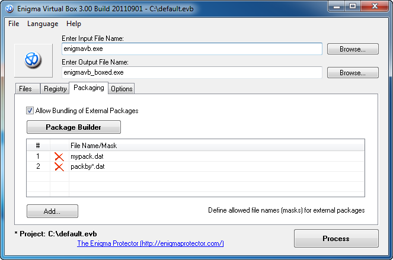
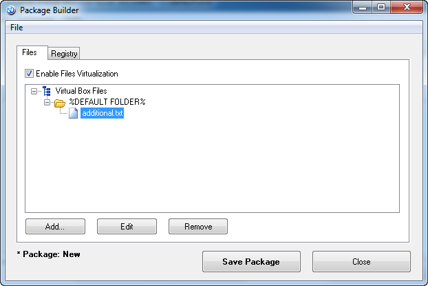

When no Packaging is used, all embedded files are being merged to main executable file you selected. In some cases, it is useful to have embedded files in some external file (separated from main executable file), such cases is the point of Packaging feature. It allows to create separate files, that includes set of virtual files and registry, that can be used by main packed executable.
This page allows to specify the list of allowed file names of external packages and build the new packages. Packed executable will look through defined files for valid package file while execution. If package file is found and validated, the virtual content will be loaded from it.
Package file may be copied to the user PC to overwrite or append virtual content embedded to the executable. Note, if the same files or registry items exist in few packages, the file/registry from the newer package is used.
It is possible to set up the path variable that will point to an external folder from where the package will be loaded. Path variables match the names of root folders for Files Virtualization. For example, if the package file/mask contains a value %WINDOWS FOLDER%, while execution this package will be loaded from C:\Windows folder (the Windows installation folder). Note, path variables do not include path delimiter at the end.
Where packaging can be used?

Add a list of allowed file names or file masks. For example, if you add a file name like "mypack*.dat" then while execution, the file will be looking for external package that match the mask mypack*.dat and if it is found - load it content to virtual system.
Click Package Builder to open a dialog to create new external package.

Interface of Package Builder is similar with the main program. There you may also save and load template to/from external template file.
Click Save Package button to generate external package and save it to the file.